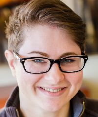

about me
AJ is a 28-year-old with a Bachelor of Arts in English Literature from Agnes Scott College in 2011 and a Full-Stack Web Development Boot Camp Certificate. Her dream job would challenge her wide variety of skills, including web development, office administration, research and analysis, creative and advertorial writing and design, in addition to providing endless opportunities for growth and learning.
AJ particularly enjoys learning about technology, world history, human rights, sociology and psychology, popular culture analysis, art techniques, and the interconnectedness of the universe.
AJ's hobbies include hand-lettering, wood carving, fiber crafts, collage, printmaking, tv-watching, code-writing, and various popular media fandoms.